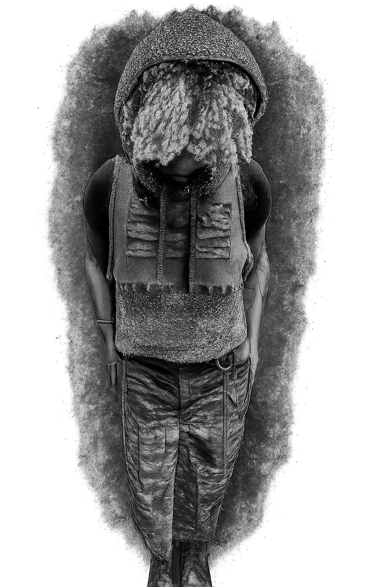

CRAFTED FROM THE PAST, BUILT FOR THE FUTURE
Youthful Dystopia is a New York-based upcycled fashion label born from the tension between collapsing worlds and youthful rebellion. Each piece is crafted from pre-loved garments — deconstructed and reassembled with raw textures, strange silhouettes, and survivalist energy. Nothing new. Nothing wasted. Built as armor for dreamers, drifters, and those who find beauty in the broken. Designed to blur fantasy and function, every stitch tells a story of survival, resistance, and self-expression in a world on fire.

Back to Home